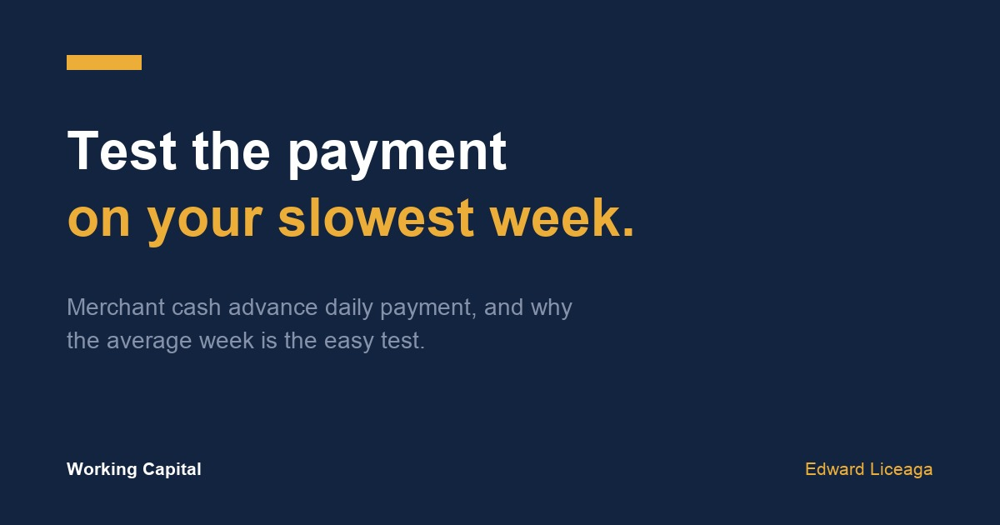

Merchant Cash Advance Daily Payment: Test It Against Your Slowest Week
A payment that fits your average week can still miss your slow one. The test takes an afternoon.

A merchant cash advance daily payment looks small on an offer. Spread $1,500 a week across five business days and you get $300, which sounds manageable to an owner depositing $60,000 a month.
That reading checks the payment against the average week. The same payment also comes out during the slowest week you have, so that is the week to test it on.
What the payment is
An advance is a purchase of future receivables, not a loan. The payback is set at signing, and a set amount, usually daily or weekly, comes out of your business account until it is done. I went through how that cost works in factor rate vs interest rate explained. Terms differ by agreement, so read yours.
An example, with round numbers
This is an illustration, not a client file and not an offer.
A shop deposits $60,000 a month, about $13,800 a week. In a normal week, $11,500 leaves for payroll, rent, suppliers, and card fees. That leaves $2,300 of room. The account usually holds about $4,000 of cushion.
Test one: the average week
A $1,500 weekly payment fits inside the $2,300, with $800 left over. This is where a lot of owners stop.
Some go further and treat the whole $2,300 as the limit. Over 26 weeks that is a $59,800 payback. At a 1.3 factor, it works out to an advance of about $46,000. On average-week math, that size looks fine.
Test two: the slow week
Now pull last year's statements and find the slowest week. Say $10,500 came in. Suppliers and card fees fall with sales, while payroll and rent mostly stay where they are, so $10,000 went out. The room is $500.
The $1,500 payment leaves that week $1,000 short, and the shortfall comes out of the $4,000 cushion. Two slow weeks in a row take half of it. A normal week then puts back $800, so one bad week takes a little more than one good week to repair.
The $2,300 payment leaves the same slow week $1,800 short. The cushion lasts just over two of those weeks, and a normal week puts nothing back, because the payment has used all the room. Any slow week stays in the account until the payback ends.
Work backward from the week you can survive
Try $1,000 a week. The slow week comes up $500 short, and a normal week puts back $1,300. Four slow weeks in a row would use half the cushion, and the account recovers quickly once sales return.
Over 26 weeks, $1,000 a week is a $26,000 payback. At the same 1.3 factor, that is an advance of $20,000, compared with $46,000 on average-week math. The deposits are identical in both versions.
If the job needs more than the slow-week number, you have two questions to answer. Does the use of the money earn enough to justify the tighter weeks? What does a longer term do to the payment and to the total cost? Get both numbers in writing before you compare. The remittance limit is also one reason a file can come back smaller than expected, which I covered in how much funding can my business get.
Daily or weekly
The same total behaves differently on each schedule. A $300 daily debit is easier to absorb on any given day, but it also comes out on days with no deposits. That matters for a business that closes on Mondays or waits on a few large checks.
A $1,500 weekly debit gives you more days between payments and one larger hit. If it lands the same day payroll clears, an account that runs close to zero can go negative. Negative days are one of the first things a funder catches when reading statements, as I laid out in what underwriters look for in bank statements.
Map your own week before you sign: which days the deposits arrive, and which days payroll, rent, and suppliers clear. Then ask which day or days the debit would run.
What it costs when the payment does not fit
The direct cost is the cushion. The slower cost is what the next three months of statements show: thinner balances and negative days, which can make the next file harder. Some owners then take a second position to cover the first, and both payments draw from the same account.
Before you sign, read what the agreement says about a returned debit. Ask what happens if sales fall, whether the payment can be adjusted, and what you would have to do to request that. Get the answers in writing.
Run it on your own numbers
This takes an afternoon. Lay out your deposits by week for as many months as you have, and mark the three slowest weeks. Add up what left the account in each of them. The difference is your room in a bad week.
Subtract the payment you are considering. Then count how many of those weeks your balance could cover, and how many normal weeks it would take to refill. If the answer makes you uncomfortable, ask for a smaller amount or a different schedule.
If the numbers work and you want a real read on your file, send me a message on LinkedIn: linkedin.com/in/edward-michael-liceaga-687247376
May qualify, subject to approval. Terms, amounts, payment schedules, and timing vary by file. The figures above are an illustrative example, not a client file or an offer. A merchant cash advance is the purchase of future receivables, not a loan, and it can cost far more than bank financing. I co-founded Amsterdam Capital Group, a direct funder.